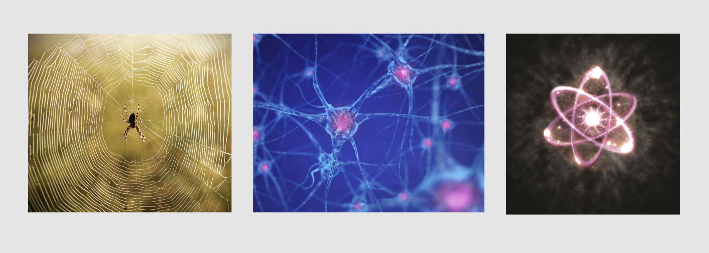

Notes:
1 Used Processing to create code and design
2 Used two separate voicemails from my parents as sounds.
The first one is my dad calling from home on the first day
of college. The second one is my mom calling me
when we were in South Korea.
Overview
The creative coding project goal was to create an interactive drawing tool that involves different sounds. I embedded two different sounds and created a code that makes marks based on the soundwaves.
Click 🧭 to jump to solution
The Problem
Missing Home & Yearning Familiarity and Comfort
Much of my work in 2019 revolved around nostalgia and missing home during college. I often talked to my parents and hearing their voices in korean became a soothing lullaby. I wanted to reflect my yearning for my parents and home, so I chose to use voicemails left by my mother and father.
Inspiration
While researching for this project, I was inspired by interconnected networks that are found in the human brain and spider webs.

To me, these networks are connections between different memories where each node or collection can be a single processor or a group of processors or memory modules. I was also inspired by the atom, which is the building block of everything. The atom structure and what it represents resonates closely with my nuclear family. My family helped me to become the person I am today, and they have impacted the way I think and what I value. Due to their influence and familiarity, I wanted to create a project that reflected nostalgia and comfort.
Coding in Processing
I learned Processsing during this project, and used this software to code visual elements. The points made around the circle are based on the amplitude of the sound wave from the sound files.
Final Tool
I created two final tools that are voicemails from my parents. The first one is my Father calling to check on me and how I am doing on the first few weeks of school. The second audio is my Mother asking me to call her back when we were in South Korea. Audio notes are included in the video. Please view full screen to see translation on the bottom left.
Reflection
I received positive feedback during my critique and people understood the cultural values of family and nostalgia that is present in the projects. I loved using Processing to create a design project. It was a eye-opening experience because it was the first time I used digital tools to create digital design that was dubbed art.